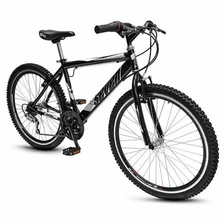

Río y Parques
Nivel: Fácil

Somos Rueda Libre, tu mejor opción de alquiler de bicicletas en Medellín. Diseñado para que disfrutes y recorras la ciudad a tu propio ritmo.

Nivel: Fácil
Nivel: Medio
Nivel: Difícil
Nuestro servicio está disponible para personas mayores de 16 años. Se debe presentar el documento de identidad.

Cómoda y liviana para las ciclorrutas.
$10.000 por hora
ReservarSe dobla en segundos; ideal para combinar con el metro.
$12.000 por hora
ReservarSuspensión delantera y 21 cambios para las subidas.
$15.000 por hora
ReservarPara rutas mixtas de asfalto y destapado.
$18.000 por hora
ReservarAsistencia eléctrica con 45 km de autonomía.
$25.000 por hora
ReservarPara niños de 6 a 10 años.
$8.000 por hora
ReservarRevisamos las bicicletas en cada alquiler.
En cada alquiler
Tu alquiler incluye casco y candado.
Incluidos
Recorre la ciudad con guías certificados.
Guías certificados
Puedes devolver tu bicicleta en nuestras tres sedes.
3 sedes